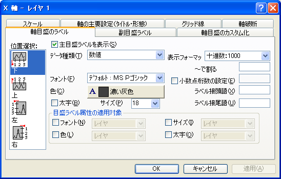

内容 |
| 下 |
これは通常、下X軸を表します。(ただし、X軸とY軸を交換している場合や、グラフの種類が横棒タイプのグラフの場合は下Y軸となります。) |
|---|---|
| 上 |
これは通常、上X軸を表します。(ただし、X軸とY軸を交換している場合や、グラフの種類が横棒タイプのグラフの場合は上Y軸となります。) |
| 左 |
これは通常、左Y軸を表します。(ただし、X軸とY軸を交換している場合や、グラフの種類が横棒タイプのグラフの場合は左X軸となります。) |
| 右 |
これは通常、右Y軸を表します。(ただし、X軸とY軸を交換している場合や、グラフの種類が横棒タイプのグラフの場合は右X軸となります。) |
| 前 |
これは、前のZ軸を表します。 |
| 後 |
これは、後ろのZ軸を表します。 |
ある軸をカスタム化した後、別の軸を選択して編集するには、最初の軸の編集が終わったら、『位置選択』リストボックスで次の軸を選び、その編集を開始します。選択したオプションをグラフに反映させないようにするには、｢適用｣ボタンを押す前に「キャンセル」ボタンをクリックします。
このチェックボックスを選択すると、主目盛ラベルが表示されます。この表示は、『副目盛ラベル』タブや『軸目盛のカスタム化.』タブからでも制御できます。
『データ種類』ドロップダウンリストから希望のオプションを選択した後、『スケール』タブで軸スケールと増分を調節することができます。例えば、X軸目盛で｢週日｣を指定した場合は、『スケール』タブを選択して、スケールの範囲を0から6まで、増分を1に設定するとよいでしょう。
| 数値 |
この場合、目盛ラベルは、軸のスケールの範囲を示す数値となります。 |
|---|---|
| データセットからのテキスト |
データセットの内容(文字型データ)を目盛ラベルとして使用します。プロジェクト内のワークシートにあるデータセット名(例えば、Data1ワークシートのC列の場合、｢data1_c｣)を、『データセット』コンボボックスで指定します。Originは、(『スケール』タブでの設定に基づいて)目盛ラベルの値に対応した数値型の値を求めます。そして、この数値を行番号として使い、選択されたデータセットのその行番号のセル値を目盛ラベルとして表示します。 |
| 時刻 |
24時間制の時刻で目盛ラベルを表示します。表示される時間のフォーマットは、右の『形式』ドロップダウンリストで選ぶことができますが、一般に時、分、秒などは、時:分:秒のように、コロン(:)で区切られて表示されます。 |
| 日付 | 暦に沿った日付値で目盛ラベルを表示します。 |
| 月 |
月の名前で目盛ラベルを表示します。このオプションでは数値、またはテキストデータセット値が使用可能です。 |
| 曜日 |
曜日の目盛ラベルを表示します。 |
| 列の表題 |
(作図される)ワークシートの列見出しを目盛ラベルとして使用します。まずワークシートからレイヤに希望のデータセットを作図します。『データ種類』ドロップダウンリストから｢列の表題｣オプションを選択します。 作図された列の見出しから目盛ラベルが作成されます。列の見出しから得られた目盛ラベルは、列番号と軸スケールの数値が等しい位置に付けられます。例えば、軸の目盛の数値が「5」の場合、Originは目盛ラベルを5番目の列の見出しと取り替えます。(列を数える場合、OriginはX列を無視します。) Note: 列見出しは、列名と列ラベルの両方を含みます。ワークシート列ラベルだけを目盛ラベルとして表示するには、そのワークシートの列名を非表示にします。これには、ワークシートをアクティブにし、「フォーマット：ワークシートの表示属性」を選びます。『見出し』グループの『列の名前』チェックボックスのチェックを外し、OKをクリックします。再びグラフをアクティブにし、「ウィンドウ：リフレッシュ」を選びます。 |
| 主目盛りラベル用データセット |
｢データセットからのテキスト｣オプションと同様、データセットの内容を目盛ラベルとして使用します。プロジェクト内のワークシートにあるデータセット名(例えば、｢data1_c｣)を、『データセット』コンボボックスで指定します。 このオプションは、指定したデータセットの各値が、軸の1番目の主刻みから開始し、順番に主刻みに割り当てられるという点で｢データセットからのテキスト｣オプションと異なります。例えば、指定されたデータセットの第1行の値は最初の主目盛ラベルに、第2行の値は2番目の主目盛ラベルに表示されます。 |
| カテゴリー |
X列およびY列の両方にユーザ定義のカテゴリーデータを入力することができます。カテゴリーデータをプロットする前に、列をカテゴリーデータ属性にする必要があります。列を選択し、メニューから「列：カテゴリーデータとして設定」を選択するか、選択した列で右クリックして、ショートカットメニューから「カテゴリーとして設定」を選びます。 これは、列がカテゴリーデータを含んでいることを通知するだけです。 |
| 目盛付き文字列 |
このオプションを使って目盛ラベルにユーザ定義の文字列を使用することができます。これを選択すると空白のボックスが出てくるので、そこに文字列を入力します。文字列を分けるにはスペースを入力します。 1つの目盛ラベル内にスペースのある文字列を入力したい場合は、引用符で囲んで下さい。例えば、Asia "North America" "South America" のように入力することができます。こうすると、3つの文字列"Asia"、 "North America"、 "South America"が1つの目盛ラベルに入ります。 |
このドロップダウンリストから、希望の目盛ラベルフォントを選びます。
このドロップダウンリストから希望の目盛ラベルの色を選びます。
主/副の目盛ラベルを太字にするには、このチェックボックスにチェックをします。
このボックスで、主軸と副軸目盛ラベルのフォントサイズを指定します。
このドロップダウンリストで、目盛ラベルの表示フォーマットを指定します。『形式』ドロップダウンリストに出てくるオプションは、『データ種類』ドロップダウンリストでの選択によって異なります。
『～で割る』テキストボックスに数値が入っていると、(主/副の)目盛ラベルは、その数で割られます。このテキストボックスに式を入力することもできます。例えば、すべてのラベルを1/3で割るには、テキストボックスに1/3と入力します。
数値の目盛ラベルに表示される小数点以下の桁数を指定するには、このチェックボックスにチェックをして、テキストボックスにその桁数を入力します。
主目盛ラベルの表示に付加される接頭語を、このテキストボックスに入力します。
|
Note: 『ラベル接頭語』テキストボックスは、特殊フォーマットコマンド(上付き文字やギリシャ文字など)をサポートします。特殊フォーマッティングコマンドの詳細は、『作図：グラフの編集』を参照してください。 |
主目盛ラベルの表示に付加される接尾語をこのテキストボックスに入力します。(例えば、mm、°F、K等の単位など)
『ラベル接尾語』と『ラベル接頭語』テキストボックスは、特殊フォーマットコマンド(上付き文字やギリシャ文字など)をサポートします。『エスケープシーケンス』もご覧下さい。
『フォント』チェックボックスにチェックを付けると、『フォント』ドロップダウンリストで選択されたフォントの種類の適用対象を、現レイヤのみ、ウィンドウ全体、全てのグラフウィンドウ(プロジェクトファイル内)の目盛ラベルに広げることができます。
色チェックボックスを選択し、色 ドロップダウンリストの設定を レイヤ, ウィンドウ, 全てのウィンドウ(現プロジェクト内)のいずれかに適用します。
『サイズ』チェックボックスにチェックを付けると、フォントの『サイズ』コンボボックスで選択されたフォントの大きさの適用対象を、現レイヤのみ、ウィンドウ全体、全てのグラフウィンドウ(プロジェクトファイル内)の目盛ラベルに広げることができます。
『太字』チェックボックスにチェックを付けると、フォントの『太字』チェックボックスの指定の適用対象を、現レイヤのみ、ウィンドウ全体、全てのグラフウィンドウ(プロジェクトファイル内)の目盛ラベルに広げることができます。